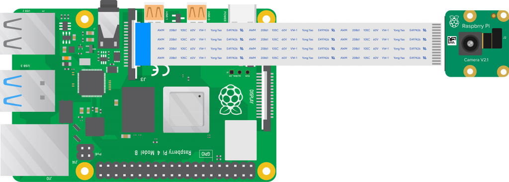

Flask-видеострим с Raspberry Pi Camera
Теоретическая часть
Raspberry Pi Camera выдаёт RGB-кадры, однако для браузера удобнее поток
MJPEG — последовательность JPEG-кадров, упакованная в
multipart/x-mixed-replace.
В этом уроке мы:
получаем кадр через Picamera2 в RGB888;
по требованию поворачиваем его (0 / 90 / 180 / 270 °);
сжимаем в JPEG (≈90 кБ при 1280 × 720);
публикуем поток сервером Flask;
создаём веб-страницу с просмотром, кнопками поворота и снимком.
Мы будем использовать
Picamera2 — Python-обёртка над libcamera;
OpenCV — поворот и кодирование JPEG;
Flask — лёгкий веб-фреймворк.
Необходимые компоненты
Raspberry Pi 4/5 (или другая с CSI);
Камера Raspberry Pi v1.3/v2/HQ/Pi 5;
Шлейф CSI;
microSD c Raspberry Pi OS 64-bit;
Любой браузер для просмотра.
Схема подключения
{kind=link}

Рис. 1: Подключение камеры к Raspberry Pi
Установка необходимых библиотек
sudo apt update
sudo apt install -y python3-picamera2 python3-opencv python3-flask
Структура проекта
lessons/
└── pi_live_cam/
├── app.py # Flask-сервер
└── templates/
└── index.html # Веб-клиент
Код программы
Файл ``app.py``
#!/usr/bin/env python3
from flask import Flask, Response, request, render_template
from picamera2 import Picamera2
import cv2, time
app = Flask(__name__)
cam = Picamera2()
# ── конфигурация камеры ─────────────────────────────────────
cam.configure(cam.create_preview_configuration(
main={"size": (1280, 720), "format": "RGB888"}))
cam.start()
time.sleep(2) # стабилизация автоэкспозиции
ROT = 0 # текущий угол
Q = 90 # JPEG-качество
rot_map = {90: cv2.ROTATE_90_CLOCKWISE,
180: cv2.ROTATE_180,
270: cv2.ROTATE_90_COUNTERCLOCKWISE}
def mjpeg_stream():
"""Генератор MJPEG-потока."""
while True:
frame = cam.capture_array()
if ROT % 360:
frame = cv2.rotate(frame, rot_map[ROT % 360])
ok, buf = cv2.imencode(".jpg", frame,
[cv2.IMWRITE_JPEG_QUALITY, Q])
if ok:
yield (b"--frame\r\n"
b"Content-Type: image/jpeg\r\n\r\n" +
buf.tobytes() + b"\r\n")
@app.route("/")
def index():
return render_template("index.html")
@app.route("/video_feed")
def video_feed():
return Response(mjpeg_stream(),
mimetype="multipart/x-mixed-replace; boundary=frame")
@app.post("/rotate")
def rotate():
global ROT
try:
ROT = int(request.form.get("deg", 0)) % 360
except ValueError:
ROT = 0
return ("", 204)
@app.route("/capture")
def capture():
frame = cam.capture_array()
if ROT % 360:
frame = cv2.rotate(frame, rot_map[ROT % 360])
_, buf = cv2.imencode(".jpg", frame,
[cv2.IMWRITE_JPEG_QUALITY, 95])
return Response(buf.tobytes(),
mimetype="image/jpeg",
headers={"Content-Disposition":
"attachment; filename=snapshot.jpg"})
if __name__ == "__main__":
app.run(host="0.0.0.0", port=5000, threaded=True)
Файл ``templates/index.html``
<!doctype html>
<html lang="ru">
<head>
<meta charset="utf-8" />
<title>Pi Live Cam</title>
<meta name="viewport" content="width=device-width, initial-scale=1">
<style>
:root{--bg:#0e1117;--fg:#e6edf3;--accent:#238636;
--accent-hover:#2ea043;--card:#161b22;font-size:16px;}
body{margin:0;font-family:system-ui,sans-serif;background:var(--bg);
color:var(--fg);display:flex;flex-direction:column;
align-items:center;min-height:100vh;}
h1{margin:1rem 0;font-size:1.5rem;}
#stream{max-width:90%;border:4px solid var(--card);
border-radius:12px;box-shadow:0 0 10px rgba(0,0,0,.6);}
.controls{margin:1.5rem 0;display:flex;gap:.5rem;flex-wrap:wrap;
justify-content:center;}
button{background:var(--accent);color:#fff;border:none;
border-radius:8px;padding:.6rem 1.2rem;cursor:pointer;
font-size:1rem;transition:background .2s;}
button:hover{background:var(--accent-hover);}
input{width:5rem;padding:.4rem;border-radius:6px;border:none;}
footer{margin-top:auto;padding:1rem;font-size:.8rem;opacity:.6;}
</style>
</head>
<body>
<h1>📡 Live-трансляция с Raspberry Pi Camera</h1>
<img id="stream" src="/video_feed" alt="live stream">
<div class="controls">
<button onclick="rotate(-90)">⟲ −90°</button>
<button onclick="rotate(90)">⟳ +90°</button>
<input id="deg" type="number" value="0" step="1">°
<button onclick="rotateCustom()">↻ Повернуть</button>
<button onclick="capture()">📸 Снимок</button>
</div>
<footer>RGB888 → MJPEG | Flask & Picamera2</footer>
<script>
function rotate(angle){
fetch('/rotate',{method:'POST',
headers:{'Content-Type':'application/x-www-form-urlencoded'},
body:'deg='+angle});
}
function rotateCustom(){
const v=document.getElementById('deg').value||0;
rotate(parseInt(v,10));
}
function capture(){
fetch('/capture')
.then(r=>r.blob())
.then(b=>{
const url=URL.createObjectURL(b);
const l=document.createElement('a');
l.href=url;
l.download='snapshot_'+Date.now()+'.jpg';
document.body.appendChild(l);
l.click();
l.remove();
URL.revokeObjectURL(url);
});
}
</script>
</body>
</html>
Разбор кода
Picamera2получает кадры;mjpeg_streamформирует правильные границы--frame;энд-поинт
/rotateменяет угол,/captureсохраняет JPEG;HTML-клиент отображает поток и посылает команды Fetch-запросами.
Запуск программы
python3 lessons/pi_live_cam/app.py
После запуска зайдите в браузере на
http://<IP_Raspberry_Pi>:5000
Ожидаемый результат

Рис. 2: Интерфейс трансляции и управления камерой
Практические применения
Домашнее видеонаблюдение;
Лабораторные стенды;
Тайм-лапс;
Интеграция в умный дом;
Робототехника.
Дополнительные задания
Защитите поток авторизацией.
Записывайте видео параллельно.
Перейдите на WebSocket-управление.
Дайте выбор разрешения и качества.
Добавьте детекцию движения.
Завершение работы
Нажмите Ctrl + C в терминале — камера освободится.
Поздравляем — у вас полноценная веб-камера на Raspberry Pi! 🎉